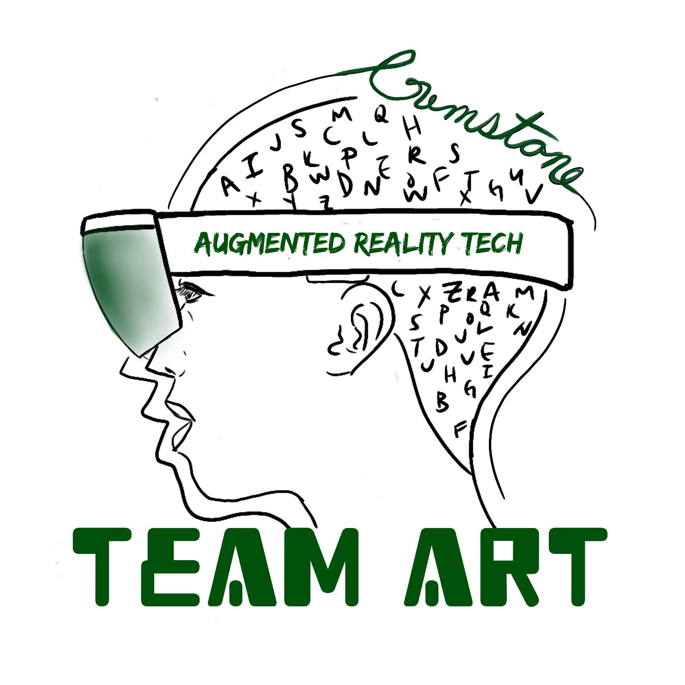
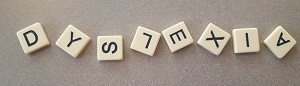

The Augmented Reality Aid project strives to help children overcome their learning disabilities, such as dyslexia, by providing them real time handwriting correction. Whether it be by correcting their spelling or incorrect characters, children will be able to get live feedback on their papers as they are being written. Currently, dyslexia is the leading learning disability and affects roughly 1 in 10 people worldwide. This project aims to help those people by utilizing the Microsoft HoloLens and other augmented reality technologies to provide on screen corrections as the user writes and makes mistakes.

This project takes advantage of the latest technology advancements in the field of augmented reality. By utilizing the different features of the Microsoft HoloLens, our team has been able to work towards creating a solution to the most common reading disability in the world. What we find most interesting about this project are the document manipulations capabilities. Through manipulating different aspects of the view, we can change the color of the page, bold key words, and provide suggested edits virtually without editing the physical document itself. These edits take advantage of the most innovative technology to help the general public with everydays task such as reading and writing.

In our opinion, this project will improve the quality of life of children learning disabilities such as dyslexia. This project will not only helps these kids perform better when they are wearing the headset, but they will also able to perform better without it for they can learn from their mistakes faster when feedback is provided in real time. By providing real time handwriting correction for children with dyslexia, our team aims to help these kids overcome their learning disabilities so they can be more productive both inside the classroom and in the workforce. In addition, this project can be extended to help populations other than children such as people learning a new language.